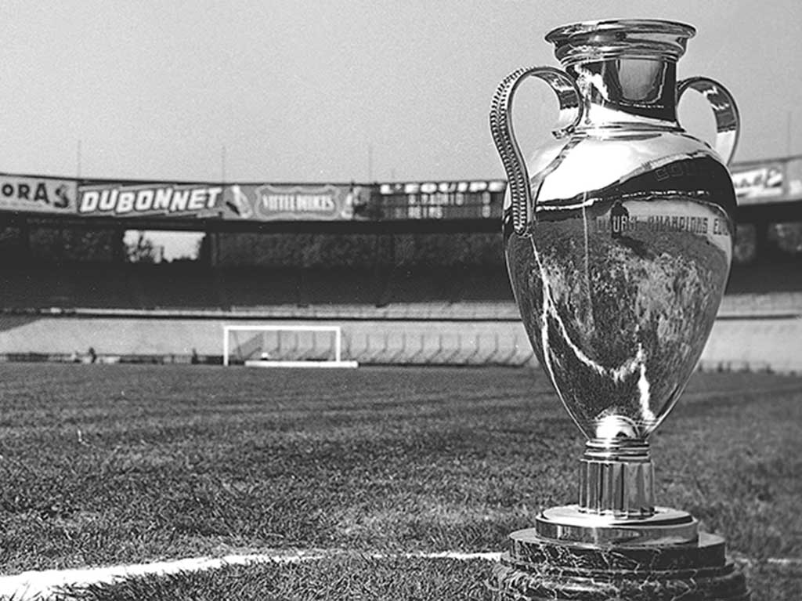

La historia de la Champions League
Los orígenes
La Champions nació en 1955 a partir de una idea de Gabriel Hanot, periodista del diario francés L'Équipe. La prensa inglesa había llamado al Wolverhampton «campeón del mundo» por ganar un amistoso, y Hanot propuso algo mejor para saber quién era el mejor equipo de Europa: un torneo entre los campeones de cada país.
La primera edición se jugó en la temporada 1955-1956 con 16 equipos, y el Real Madrid ganó la final en París.
De Copa de Europa a Champions
Durante sus primeras décadas el torneo se llamó Copa de Europa y se jugaba por eliminatorias desde el principio. En 1992 la UEFA lo transformó en la UEFA Champions League: añadió una fase de grupos y un nuevo logotipo con el balón de estrellas.
Ese mismo año se estrenó el famoso himno, que suena antes de cada partido. Y el trofeo recibió el apodo de «la Orejona» por sus enormes asas.

La Copa de Europa, «la Orejona». Foto: © de su autor, usada con fines educativos.
Lo más destacado
- Récord 15 El Real Madrid es el club con más títulos.
- Goles 140 Cristiano Ronaldo es el máximo goleador de la historia.
- Nuevo 1.º El PSG ganó su primer título en 2025 con un 5-0 al Inter.
El trofeo, de fiesta con la afición
Cuando un equipo gana la Champions, la Orejona viaja con él a su ciudad. En 2016 el Real Madrid ganó la Undécima en Milán y, al volver, llevó el trofeo al Ayuntamiento y a la Comunidad de Madrid, recorrió las calles en autobús ante miles de aficionados y lo celebró en un balcón frente a la plaza llena.
Vídeo: «El Real Madrid ofreció la Undécima a los madridistas», de Real Madrid C.F., en Wikimedia Commons, licencia CC BY 3.0. Fragmento recortado.
Revive una final
Resumen de la final de 2024 en Wembley: Real Madrid 2 - 0 Borussia Dortmund, la decimoquinta Copa de Europa del club blanco.